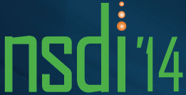

Work Experience
Principal Software Engineer at Oracle Corporation
Virtualization Team (Jul '15 - CURRENT)
Research Scientist at NEC Europe Ltd,
Heidelberg - Germany 
ClickOS / Network Function Virtualization (Aug '12 - Jun '15)
Working on minimalistic and specialised virtual machines (5MB) to be used as network middleboxes, called ClickOS:
- Built ClickOS that runs in today's clouds having fast boot times and unmatched network performance.
- Changing the underlying backend and frontend drivers in Xen to improved packet I/O in virtual machines by a factor of 10, and beyond 10 Gb/s.
- Improved boot times down to 30 miliseconds, by developing a toolstack ground up for Xen, on top of the low-level userspace libraries.
- Optimized the toolstack to quickly run thousands of ClickOS guests in a single server.
- Heavily benchmarked and analysed the Xen network I/O from the guest down to the host.
- Contributed to netmap framework by giving support for Xen/IOMMU in their drivers.
- Contributed to Click modular router framework by adding a MiniOS driver.
- Presented in top conferences (developer-oriented and research) from Xen Summit '13, FOSDEM '14 and USENIX NSDI '14 earlier this year. The source code was made opensource as part of this project (http://cnp.neclab.eu).
Software Engineer at University of Aveiro, Aveiro - Portugal
HTML5 Webphone, Apollo(Set '11 - Jul '12)
- Developed a rich voice-based communications solution which doesn’t resort to any fall back mechanisms (e.g. Flash, Java) and enables users to communicate directly between peers using HTML5 technologies (e.g. WebRTC, WebSockets) and through a specially designed transport gateway within an IMS network.
- Ported Speex, G711 and AMR audio codecs to the the browser to achieve better security and improved communication between peers.
- Deployed and programmed WASPMote sensors to support an intelligent farm, called Apollo.
Talks

USENIX NSDI 2014, April 4,
ClickOS and the Art of Network Function Virtualization
FOSDEM 2014, February 1 - 2
High Performance Network Function Virtualization with ClickOS
Xen Developer Summit 2013, October 24 - 25
Enabling Fast, Dynamic Network Processing with ClickOS
Publications
Rollback Recovery for Middleboxes
Justine Sherry, Peter Xiang Gao, Soumya Basu, Aurojit Panda, Arvind Krishnamurthy, Christian Maciocco, Maziar Manesh, João Martins, Sylvia Ratnasamy, Luigi Rizzo, Scott Shenker
ACM SIGCOMM 2015 (Best Student Paper Award)
The Case for the Superfluid Cloud,
Filipe Manco, Joao Martins, Kenichi Yasukata, Jose Mendes, Simon Kuenzer, and Felipe Huici (NEC Europe Ltd.)
USENIX HotCloud 2015
IN-NET: In-Network Processing for the Masses
Radu Stoenescu, Vladimir Olteanu, Matei Popovici, (University of Bucharest) Mohamed Ahmed, Joao Martins, Roberto Bifulco, Filipe Manco, Felipe Huici, (NEC Europe Ltd.) Georgios Smaragdakis, (MIT CSAIL) Mark Handley, (University College London) Costin Raiciu (University of Bucharest)
ACM/USENIX EuroSys 2015
ClickOS and the Art of Network Function Virtualization,
Joao Martins, Mohamed Ahmed (NEC Europe Ltd), Costin Raiciu, Vladimir Olteanu (University of Bucharest), Michio Honda, Roberto Bifulco, Felipe Huici (NEC Europe Ltd),
USENIX NSDI 2014
Enabling Fast, Dynamic Network Processing with ClickOS
Joao Martins, Mohamed Ahmed (NEC Europe Ltd), Costin Raiciu (University of Bucharest), Felipe Huici (NEC Europe Ltd)
SIGCOMM HotSDN 2013 Workshop
Towards Minimalistic, Virtualized Content Caches with Minicache,
Simon Kuenzer, Joao Martins, Mohamed Ahmed, Felipe Huici (NEC Europe Ltd),
CoNEXT HotMiddlebox 2013 Workshop
Rethinking Access Networks with High Performance Virtual Software BRASes
Roberto Bifulco, Thomas Dietz, Felipe Huici, Mohamed Ahmed, Joao Martins, Saverio Niccolini, Hans-Joerg Kolbe (NEC Europe Ltd),
EWSDN 2013 Workshop
Education
University of Aveiro
MSc in Computer Engineering and Telematics (2009 - 2011)
Thesis in Testbed Management Systems (19/20)
Published: “Experimentation made easy with the AMazING panel”, in the Proceedings for MOBICOM 2012, WiN- TECH Workshop, Istambul Turkey. Authors: Joao Martins, Joao P. Barraca, Diogo Gomes, Rui L. Aguiar
Extra-Curricular: Financial Officer in the Computer Engineering and Telematics Student branch